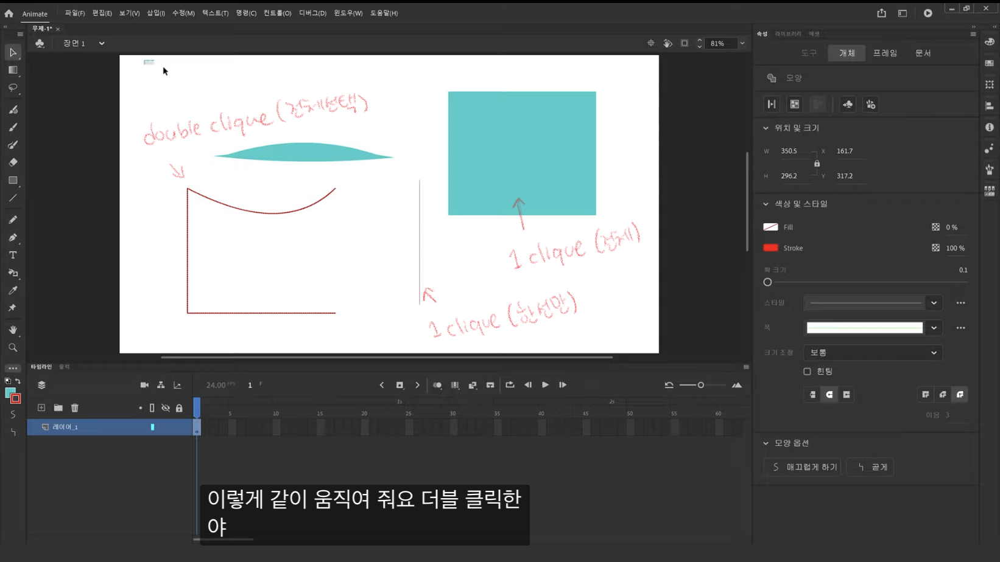

Adobe Animate.
Pourquoi ce logiciel?
Pour ce projet, j'ai choisi d'utiliser Adobe Animate pour créer mon animation. J'ai choisi ce logiciel car il offre des fonctionnalités avancées pour la création d'animations, y compris la possibilité de créer des mouvements fluides et des effets visuels attrayants. De plus, en tant qu'étudiante en multimédia, il est important de connaître et de maîtriser différents outils de création de contenu numérique. J'ai vu ce projet comme une occasion de développer mes compétences en animation et en graphisme en utilisant un logiciel que je n'avais jamais utilisé auparavant.
Description du logiciel
Adobe Animate est un puissant logiciel d'animation vectorielle pour créer des animations interactives et des applications pour différents types de supports. Il offre de nombreuses fonctionnalités, telles que la création de graphiques vectoriels, l'animation de personnages, la conception de scènes complexes, l'importation et l'exportation de fichiers multimédias, etc. Il est populaire dans l'industrie de la création de contenu numérique pour créer des publicités, des vidéos promotionnelles, des dessins animés, des jeux vidéo, etc.
Fonctions essentielles


Compétences requises/Profil.
Conception
J'ai été chargé de la conception des éléments visuels qui composent l'animation. Mon objectif principal était de créer une animation visuellement attrayante qui séduirait un large public. Dans ce contexte, j'ai pu développer une compétence particulière en matière de théorie des couleurs. Cette compétence m'a permis de créer un style visuel cohérent pour l'animation en utilisant une variété de couleurs. J'ai ainsi assumé la responsabilité de la conception de divers éléments multimédias, tels que les personnages et les arrière-plans, afin de donner vie à l'animation et d'atteindre les objectifs du projet.
Création de médias
J'ai acquis de solides compétences dans la création de médias numériques en utilisant le logiciel Adobe Animate, que je n'avais jamais utilisé auparavant. J'ai été en mesure de développer mes compétences en graphisme, en illustration et en techniques d'animation pour donner vie à l'animation 2D. J'ai également été responsable de la conception de personnages, où j'ai pu créer un personnage simple et adapté au style et au thème de l'animation.
Programmation
J'ai acquis une solide expérience en matière de programmation en créant un site web pour soutenir ma présentation. Cette décision a été prise pour montrer que j'ai développé toutes les compétences nécessaires pour réussir dans le domaine du multimédia,y compris la programmation, en plus de mes compétences créatives. Grâce à ce projet, j'ai été capable de mettre en pratique mes connaissances en programmation pour créer un site web pour un support de ma présentation.
Intégration
J'ai acquis des compétences en intégration qui m'ont permis d'assembler toutes les composantes de mon animation dans un produit final fonctionnel et esthétiquement cohérent. J'ai travaillé avec différents types de médias, y compris des images, des sons et des animations, et j'ai appris à les intégrer de manière fluide dans l'animation. J'ai également acquis une compréhension approfondie des principes de base de la conception web, tels que la structure de la page et la navigation, ce qui m'a permis de créer une présentation convaincante de mon projet.
Environnement professionnel
Au sein de l'environnement professionnel de l'école, j'ai travaillé sur mon projet en utilisant mon ordinateur portable avec les logiciels Adobe Illustrator et Animate, ainsi que le compte fourni par l'école. J'ai également bénéficié de la supervision d'un superviseur tout au long de mon travail.
Processus.
- Recherche des inspirations
- Conceptualisation du projet
Semaine 1: Planification de la recherche
- Apprendre Adobe Animate
- Écrire un scénario
- Faire une scénarimage
Semaine 2: Préparation du projet

- Esquisses des personnages
- Esquisses des arrière-plans
- Créer ces éléments avec Adobe Illustrator et importer dans Adobe Animate
Semaine 3: Début du projet
- Assembler tous les éléments dans l'animation
- Création d'animations image par image
- Faire une maquette de mon Site Web
Semaine 4: Finalisation du projet
- Paufiner l'animation
- Mettre le background-music
- Coder le Site Web
Semaine 5: Préparation de la présentation
Projet.
Description du projet
Le projet que j'ai réalisé dans le cadre de mes études est une animation 2D portant sur le thème de réflextion
sur la perte de la joie de vivre et la recherche de la motivation personnelle. L’animation raconte l’histoire
d’une petite fille qui court pour attraper une lumière qui semble vouloir la guider. Au début, la fille est joyeuse,
mais au fur et à mesure qu’elle grandit, elle perd peu à peu cette joie de vivre, en raison des contraintes de la vie
sociale et de sa perte d’innocence. Finalement, elle arrive dans un endroit où la lumière la guide vers un miroir,
où elle voit quelque chose qui lui redonne ses couleurs et sa joie de vivre. Nous sommes libres d’imaginer ce qui se
trouve dans le miroir, cela pourrait être quelque chose qui nous motive ou qui nous inspire.
Pour créer cette animation, j'ai utilisé le logiciel Adobe Animate, ce qui m'a demandé un apprentissage important.
J'ai également développé mes compétences en graphisme, illustration et techniques d'animation, ce qui m'a permis de
créer un personnage simple et cohérent avec le style et le thème du projet.
En effet, j’ai voulu montrer que dans notre jeunesse, nous avons une joie de vivre naturelle, sans les contraintes
de la vie sociale. Cependant, en grandissant et en étant confronté au monde extérieur, nous perdons cette innocence
et notre monde devient plus terne et sombre.
Dans l’animation, les couleurs qui changent constamment sur la petite fille représentent sa joie de vivre,
tandis que les couleurs qui deviennent noires symbolisent la perte de cette joie. Et les cheveux de la petite fille qui ont poussé marquent sa croissance.
Mon objectif était de critiquer la société actuelle qui encourage la standardisation et décourage
l'individualité et l'unicité, tout en créant une connexion avec les personnes qui vivent des difficultés
similaires. Aussi, mon objectif était de créer une animation professionnelle et harmonieuse qui refléterait ma vision artistique.
Pourquoi ce projet?
- Intérêt pour l'animation
- Développer mes compétences en animation
- intérêt pour les domaines du graphique, de l’illustration et de l’animation